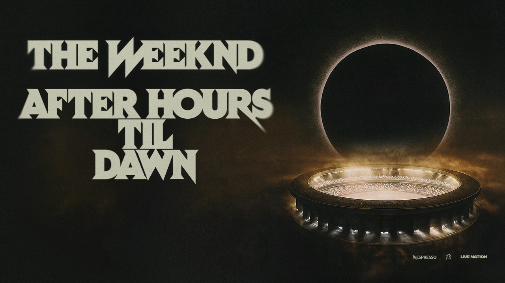
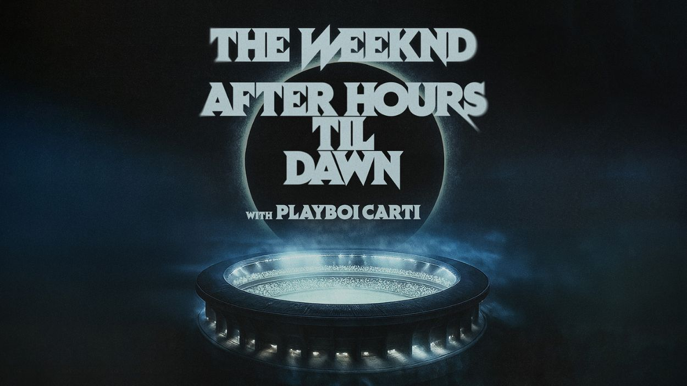
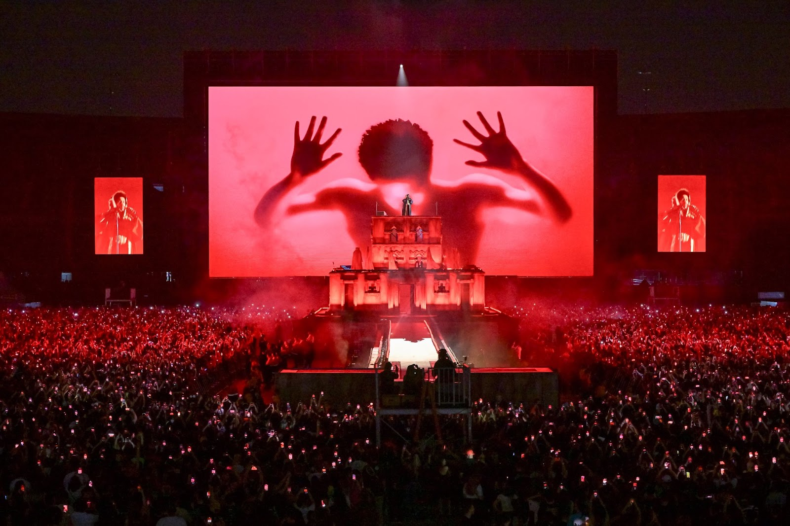
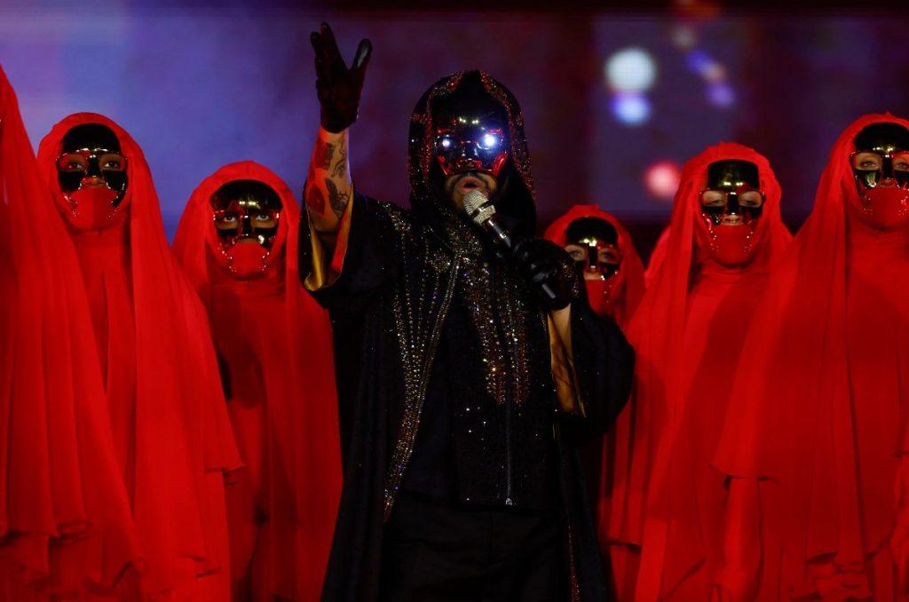
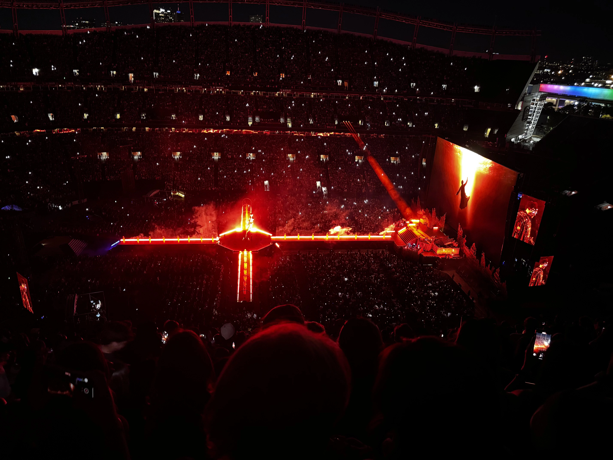
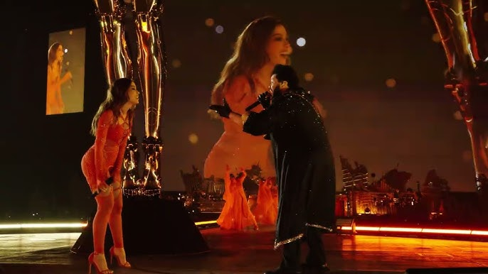
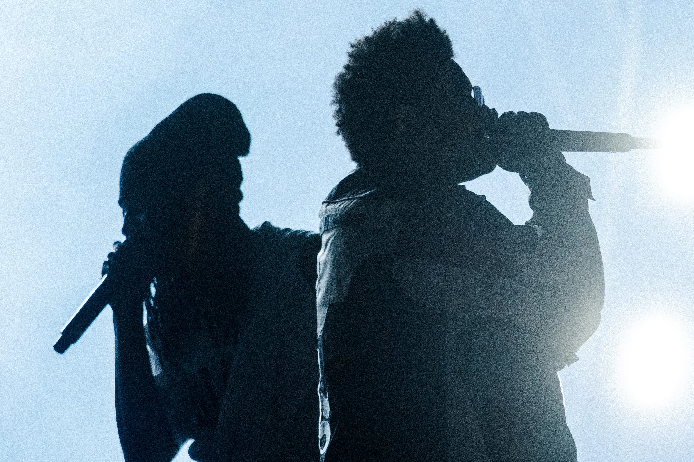

Próximas Fechas

- Lun, Apr 20 - Estadio GNP Seguros, México City
- Mar, Apr 21 - Estadio GNP Seguros, México City
- Mie, Apr 22 - Estadio GNP Seguros, México City
- Dom, Apr 26 - Estádio Nilton Santos, Río de Janeiro
- Vie, May 01 - Estádio MorumBIS, São Paulo
Tour Europa 2026

- Vie, Jun 12 - Wembley Stadium, Londres, Reino Unido
- Dom, Jun 14 - O2 Arena, Londres, Reino Unido
- Mar, Jun 16 - Stade de France, París, Francia
- Jue, Jun 18 - Accor Arena, París, Francia
- Vie, Jun 20 - Olympiastadion, Berlín, Alemania
- Dom, Jun 22 - Mercedes-Benz Arena, Berlín, Alemania
- Mar, Jun 24 - San Siro, Milán, Italia
- Jue, Jun 26 - Mediolanum Forum, Milán, Italia
- Vie, Jun 28 - Estadio Olímpico, Roma, Italia
- Dom, Jun 30 - Palau Sant Jordi, Barcelona, España
- Mar, Jul 02 - Estadio Metropolitano, Madrid, España
- Jue, Jul 04 - WiZink Center, Madrid, España
- Vie, Jul 06 - Estádio da Luz, Lisboa, Portugal
- Dom, Jul 08 - Altice Arena, Lisboa, Portugal
¡Una experiencia inolvidable!






Noticias y Novedades
- Nuevo álbum: *Hurry Up Tomorrow* lanzado el 31 de enero de 2025, cierra su trilogía musical.
- “Cry for Me”: sencillo lanzado el 4 de febrero con mezcla de R&B y trap.
- Experiencia inmersiva: vídeo de “Open Hearts” disponible en Apple Vision Pro.
- Récords: más de 163,000 asistentes en el MetLife Stadium.
- Gira 2026: incluye un nuevo concierto en Madrid.
Ya disponible en YouTube